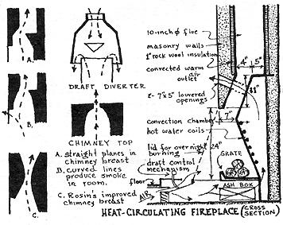
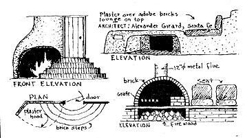
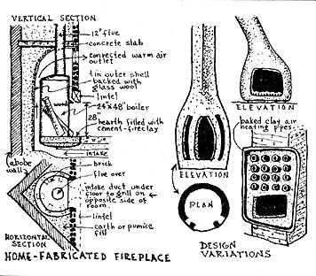
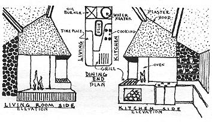
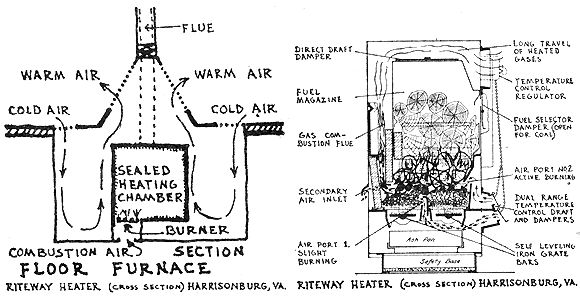
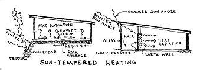

No major stretch of the imagination is required to see the status of the fireplace in relation to building site and indoor climate. Given the proper set of climatic circumstances, a well designed fireplace may serve as the sole heating plant. Some experimental fireplace units recently built in England have a reputed 80% efficiency. A Heat Circulating type of fireplace-now becoming more prevalent in this country-barely achieves an efficiency of 40%, and conventional open hearth units give off less than 25% of the heat content of the fuel consumed. With the conventional fireplaces, half of the heat content is lost to the atmosphere in the form of chimney gases. Another one-fourth is conducted directly into the surrounding masonry. An even greater loss occurs when the fireplace is located on an outside wall.
But a fireplace can have a significance to site and climate over and above the pure economy of indoor heating. Symbolically the fireplace belongs more in the realm of the building site-the landscape garden plan-than it does to the house proper. The Chinese have a point here. The house symbolizes the feminine (Yin) principle. As a container, it is hollow, womb-like, commodious and warm; it is run, managed, and cleaned by women. But the site upon which the house is placed contains all the principles of masculinity (Yang). The dark, passive, submissive character of the house is contrasted to the bright and forceful elements of the open landscape. And the most obvious phallic symbol is of course the chimney. Man "tends" his symbol by insisting (as he usually does) on making the fires-even if he does nothing else in the house. Any observant architect will witness the fact that it is more often the husband than the wife who is concerned with the design and eventual "looks" of the fireplace.
I have personally found that more freedom in design can be executed and accepted in the landscape plan and in the fireplace design than in practically any other component of the house. Clients will approve contemporary line and form in their gardens and fireplaces, but reject the same principles of good design when applied to the house proper! This fact gives me reason to expect better results-both functionally and "esthetically"-from the fireplace than from the room in which it is to be placed.
Unfortunately, most of the technical improvements in fireplace design have not yet filtered down into common usage-and this in spite of the fact that improvements occurred as far back in time as 1624, when Louis Savot invented the first Heat Circulating fireplace. His unit was installed in the Louvre, in Paris, and became the direct prototype of Ben Franklin's 1742 "Pennsylvanian Stove." The 1624 French fireplace achieved from 30 to 45 percent more efficiency than most American tract-home fireplaces of today! Savot surrounded the grate with a metal air chamber which had warm air outlets above the fire opening. He also supplied the fire with air from under the floor. Thus room drafts were reduced and combustion efficiency further improved.
Few people are aware of it, but practically all of the technical features of Franklin's Pennsylvanian Stove were copied from earlier inventors. Savot's concept of pre-heated draft was employed by Franklin with little change in design. Prince Rupert's descending flue, invented in 1678, was also applied on the early Franklin stoves. The smoke rose in front of a hollow metal back, then passed over the top and down the opposite side. Then, at the same level as the hearth, the smoke ascended the flue. Ducts, similar in design to those invented by Nicholas Gauge in 1716 were also incorporated in the Franklin stove.
A noteworthy development of the open fireplace was started in 1796 when the Englishman, Count Rumford, published his comprehensive essay on "Chimney Fireplaces." His main contribution was in the alleviation of smoking chimneys. One fault, he correctly asserted, was due to too large a chimney-throat. Rumford also introduced the inclined fireback, which increased fireplace efficiency by providing a greater radiation area. For the purpose of breaking up the current of smoke in the event of chimney down-draft, the back smoke-shelf of Rumford's improved fireplace ended abruptly-a practice strictly adhered to by fireplace masons to this day.
In keeping with my original plan of how-to-think-it as well as a how-to-do-it book, I feel that it is more important for the owner-builder to understand the aerodynamics of combustion and ventilation than it is for him to be presented with the detailed dimensions of one particular fireplace that "works." In actual practice a fireplace involves; first, the motion of air toward the fire; second, its passage through and over the fuel bed; third, the admixture of ventilating currents with combustion products; and finally the flow of chimney gases up the flue.
The first problem involves the motion of air toward the fire-the draft. Tests carried out by the Domestic Fuels and Appliances Committee in England indicate that the required volume-flow for an average fireplace opening is about 3000 cubic feet per hour-which amounts to about four complete air changes in an average size living room per hour. This same research study agency found that the amount of fresh air required for ventilating by a family of four is about 2400 cubic feet per hour. In other words, a standard fireplace will cause the displacement of over twice the amount of room air required for optimum ventilation. Half the amount of room air should therefore be drawn directly from the outside, and not be permitted to pass through the room to the fireplace. Another problem of draft is presented where fireplaces are installed in our modern, tightly-constructed, efficiently weather-stripped houses: The amount of air available for supplying the chimney draft is insufficient! A partial vacuum results, which tends to pull smoke and combustion gases back into the room.
The problem of the foot-chilling floor draft was recognised and solved by Savot through his application of a sub-floor inlet for pre-heated fresh air. If applied today, his technique would eliminate the trouble frequently encountered in modern homes, where fireplaces operate at low efficiency, and have a tendency to smoke because of the lack of free-flowing air for adequate chimney draft. Cold air currents within the room would also be minimized, for the fireplace would derive its draft independently of air-changes within the room. And finally, the combustion-efficiency would increase as the incoming draft would consist of pre-heated air. Without knowing about Savot's work, Wendell Thomas in our day has placed an air-inlet in the floor by the Stove as part of his "no-draft floor" invention noted above.
The commonly accepted fireplace is without a gate; the fire is simply bedded on the hearth. Where a grate is used and the firebed is raised off the hearth-even a few inches-a better rate of combustion results. The Stool Grate, as it is known in England, consists of raised bars upon which the firebed rests and below which air has access through a supply line. According to experiments in England, this Stool Grate system is 17% more efficient than the simple hearth.
Let us consider, secondly, the passage of air through and over the fuelbed. The grate, involving flue-control, was common use during the Victorian era. Fireplace development along this line naturally leads to incorporation of a closeable open-fire. A description of such a combination stove-fireplace has been presented by the British Building Research Station. A 50 to 55 percent efficiency over the enclosed fireplace is said to result from this closed fireplace unit.
We come, thirdly, to the admixture of ventilating currents with combustion products. Count Rumford was the first to give extensive study to inside-fireplace proportions. His final rule-of-thumb is that the back of the fire-space should be equal to the depth of the recess. Deep fuel beds produce more smoke than shallow beds, since there is scant combustion-air at the back of the grate. Experience proves that the rate of smoke-emission increases proportionally with the depth of the firebox, especially in the early stages of firing.
It is also apparent that radiation is more effective with a shallow grate; with a deep grate some radiation is mostly upwards. Rumford also found that a sloping fireback contributed to increased radiation. Higher temperatures and consequent decrease of smoke-emission results when the fireback becomes inclined toward the fire. In order to retain high temperature-and corresponding high efficiency-it becomes important, of course, to adequately insulate the fireback and walls.
Count Rumford's conclusion about the relation between the chimney opening and effective draft has yet to be scientifically refuted. The throat-opening should be sufficient to constrain the effluent to pass at a speed high enough to discourage down-drafts. Chimney-throat standards for most fireplaces call for an eight-inch opening; Rumford recommends four inches. If a damper is installed within the larger sized chimney-throat, the situation is not too bad. However, a properly designed unit makes a damper superfluous. Simply stated, if the chimney-throat is too large, then some cool air that does not affect ignition or combustion will be drawn over the fire. This naturally results in an increase of smoke-emission. Putnan recognized the truth of this relationship between throat-size and combustion:
"Cold air, being heavier than warm, will fall below the latter and press it upward to make room for itself. Thus the air in the neighborhood of the fireplace will press the hot smoke up into the chimney-throat. If this throat is only large enough to take the smoke, hot air only will enter the flue, and the draught will be rapid. But if the throat is larger than necessary, that part of the cool air of the room which enters the fireplace and becomes most heated by the fire, and next in buoyancy to the smoke, will, in its turn, be pressed up by the cooler air behind it and enter the flue alongside of the smoke. Indeed, the entire volume of the air of the room, being warmer than the outside air, will tend to enter the flue with the smoke, so long as there be room provided for its entrance."
The English scientist, Dr. P. O. Rosin, has done much significant research on the aerodynamics of open fires. He built scale-models of fire places, using celluloid sheets to reveal visually the behavior of the gaseous flow associated with open fires.
Rosin was the first to prove that Rumford's horizontal smoke-shelf on top of the fireback was aerodynamically faulty, producing eddies of smoke-laden air that back up into the room at the least down-draft. Rosin found also that the chimney-breast must be located and shaped in reference to the upper part of the fireback. A passage must be provided which contracts toward the throat and then diverges, as gradually as can practically be arranged, to the cross-section area of the flue. The lower edge of the chimney-breast should be well rounded and free from abrupt changes of direction.
The final aspect of a fireplace, the flow of gases up the flue, involves the chimney itself. A chimney performs a dual function: Production of drafts; and elimination of combustional residues. The chimney should be so designed that the draft is adequate to deliver just enough air for complete combustion within the firebox. The National Bureau of Standards tests indicate that the draftproducing ability of a chimney is substantially improved over that of conventional chimneys when the flue is reduced in cross-sectional area. Oddly enough, flue-temperature is the major factor in determining flue-size:
The formula for calculating draft is based upon mean temperature which is the average of the temperature at the base of the chimney and the temperature at the top. If the chimney construction is such that an appreciable amount of heat in the flue gases is lost through the chimney walls, the temperature at the base will have to be higher to produce a given mean temperature than if the chimney walls were to be built to resist the transfer of heat through them.
If the walls of the chimney are massive and absorb the heat of the flue gases, a long time may be required to raise the average flue gas temperature high enough to produce the necessary draft. On the other hand, a long time is required to dissipate the heat retained in the chimney walls and the draft will continue at high intensity even though no heated flue gases are supplied by the heating system.
"The ideal chimney has no heat loss through its walls and consequently no difference in temperature of flue gases between bottom and top; no heat capacity or heat-retaining ability with consequently no time lag in producing draft when combustion is started or in 'killing' draft when combustion ceases."
Obviously, the fireplace should be located on an inside wall of the house. An outside chimney, exposed to the weather on one or more sides, is bound to cool off when the fire is low. Then when the fire is kindled again, the products of combustion have to force their way out of a chimney filled with dense, cold gases. Moreover, the heat that escapes from an inside chimney is useful because it helps to warm up the house. Tests shore that insulation between the flue-lining and surrounding masonry-construction improves draft. The National Bureau of Standards has demonstrates, that a round 7-inch flue, with a cross-sectional area of only half that of a rectangular 9-inch by 12-inch flue, will produce the draft required, since in square or rectangular sections have little effect on draft. This means, of course, a substantial saving in flue-material, surrounding masonry, and labor costs.
Oftentimes some form of draft-diverter becomes necessary to prevent downdraft tendencies at the flue-terminal. A steady draft is necessary to proper combustion is to be assured over long periods of firing. One type of draft-diverter, consisting of a permanent annular opening, is especially effective under normal or down-draft conditions. Under all conditions of negative pressure in the breeching, air is admitted to it and the temperature of the mixture is always below the temperature of the flue-gases. An even simpler way to counter down-draft tendencies is to reduce the flue-terminal in cross-section area. The velocity of flue-gases is thereby increased at the flue-terminal and is sufficient to oppose tendencies toward down-draft.
Contemporary designers have long been stymied with the problem of integrating conventional fireplace rooms into the modern context. It never occurs to most of them that entirely new fireplace forms might be possible. Architect Robert Woods Kennedy, for instance, tells in his book The House about the unfortunate design-qualities of the conventional fireplace: When not in use in summer and when the ashes are removed, the fireplace is a poor center of focus. But instead of considering the possibilities of forming the fireplace into an interesting sculptural composition, Kennedy suggests placing a "planter" adjacent to the fireplace as an "alternate focus":
"A flower window is a wonderful focus because it is beautiful at night, if well lit. With such arrangement the fireplace becomes an incident rather than focus."
I personally feel that a fireplace which is truly successful in all ways-functionally as well as "esthetically"-must necessarily contribute in all ways and at all times to the interest and composition of the room in which it is located. Remember that a non-smoking hearth fire is welcome even in summer on cool mornings or evenings. The search for an "alternate focus" is admission of poor design. In France, and in some of the Scandinavian countries especially, one finds more and more original fireplaces being built.
Fireplace construction today is something of a paradox. I refer to the growing usage of Heat Circulating forms which increase room heat at the cost of progress in classic fireplace design. A number of commercial units are available (Heatform, Heat-a-labor, and Magestic are the more popular brands). The Heat Circulating form consists of a steel fireplace shell, surrounded by an outer jacket of steel. The walls are so formed that, air is trapped against the hot firebox walls, picking up heat and rising through suitable grills into the living space, the room. Cool air is draw from the same room through other grills at the floor, and a continuous circulating stream is thus formed. An even more effective warm air distribution can be obtained by placing a circulating fan in a floor duct. The fan must be powerful enough to reverse the direction of flow, and discharge warm air on the far side of the room.
As efficient as these commercial forms are, they drastically restrict the original design and character of the fireplace. Besides, they cost from $80 up. I know of one owner-builder, however, who fabricated his own heat-circulating form, using raw materials from a junk yard. It perform very effectively and probably recovers more more usable heat from the fuel consumed than the most efficient and expensive commercial unit. Following is a detailed description of this home-fabricated fireplace, along with some suggested design showing a possible exterior treatment.
The principal ingredients for this device were a discarded water-boiler about 24-inches in diameter by 4 feet high, plus several discarded range-boilers 12-inches in diameter, which can be found in abundance in most junk yards. The larger boiler must be cut down as shown, and have the upper part closed with a 1/8-inch plate.
The firebox was then set in the corner of an adobe walied room, Mexican style, and the 12-inch flue welded in place. Previously a 12-inch air duct had been formed under the floor, culminating in a distribution plenum slightly larger in diameter than the firebox. The firebox was supported by spaced bricks over this plenum, allowing free circulation to the space behind the firebox walls. An outer jacket of sheet metal was placed behind the firebox, allowing about 2-inch airspace. It was then backed by a layer of salvaged glass wool and loose pumice fill.
Brick jambs were then carried up from the floor level, adjacent with the vertical edges of the firebox. At lintel height the massive wood end for further stability. The lintel was covered on the back with asbestos and sheet metal, and was kept about an inch away from the upper face of the firebox, to allow air circulation. From the lintel up, a solid fac-ewall of brick was carried, pierced only by the warm-air outlet about 10-inches by 16-inches. About two feet above the top of the firebox, a small concrete slab was cast in place, resting in grooves cut in the outer walls and in the brick face wall, and locking the 12-inch steel flue in position. Above this slab, the triangular space around the flue was filled with earth. Where the flue pierced the roof, a mesh-reinforced collar of concrete 5-inches thick was carried up around it.
The circular hearth formed by the lip left at the lower part of the original boiler was then poured full of a fireclay-portland cement mix, and allowed to set. Wood was placed in the firebox in a vertical position, as in typical Mexican fireplaces. Fairly long logs could be so placed, and though some of the burning took place in the head of the firebox, out of sight, the heat produced was utilized in the upper radiating surfaces and showed up in the astonishingly warm air output, as distinguished from the radiant heat emitted from the open part of the fire.
(books listed in order of importance)
Building Research Station Digest No. 16: British Building Research Station, Garston, Herts., U.K.
Performance of Masonry Chimneys For Houses: research paper No. 13, U.S. Housing and Home Agency
The Open Fireplace in All Ages: J. Pickering Putnam, 1886
Solid Fuel Installations: British Coal Utilization Research Association, Post War Building Studies, No. 10, 1944
Chimneys and Fireplaces: U. of Illinois Bulletin No. F-7.0. Small Homes Council
Fireplaces and Chimneys: Farmers' Bulletin No. 1889, U.S. Dept. of Agriculture
The concept of residential heating in Great Britain is quite different from that in North America. Houses in England are usually designed for a "background heat" of 50 degrees by means of a radiant heat source. In this country, however, an ideal heating system is more generally thought of as one which provides a uniformly comfortable (70 degree) temperature throughout the house and throughout the day. This, in essence, is the difference between "space heating" and " central heating."
For technical purposes the National Bureau of Standards has defined a "space heater" as an "above-the-floor device for the direct heating of the space in which the device is located without the use of external pipes or ducts as integral parts of such heating device." In rural areas about as many people use space heaters as their sole form of heat as there are urban people who use central heating installations. The low first cost of oil, wood, coal or gas burning space heaters accounts in part for their widespread use. The independent-type heater can be easily installed and is efficient as well as low in fuel consumption. The provision of a zone of warmth by radiation is another important advantage.
But to appreciate the more basic characteristics of space heating, one must first come to an understanding of the Supplemental Concept of house warming. I refer to the use both of multi-duty appliances and of combination heating methods. In the former instance, it is possible to use a single appliance for space heating, water heating and cooking. In England this type of "combination grate" is becoming more and more popular: A space heater designed with a side oven (or a top oven), and a hinged closure hot plate for cooking. A boiler is also integrated into the unit to provide domestic hot water. Hot gases are directed around the oven or around the boiler by a single damper control. When the closure plate is up and the damper is closed the effect is one of an open fireplace. A similar kind of British heating appliance is designed for the fire unit to be located in the living room and the cooking unit in the kitchen, on the opposite side of the dividing wall. This type of back-to-back grate makes it possible for one appliance with one flue to serve two rooms. Since this type is not commercially available in North America, the owner-builder who wants it must build his own, using commercial iron grates and brick masonry.
With the exception of the Franklin stove, the first improvement over the simple wood and coal burning iron stove space heater occurred in 1836, with the invention of the air-tight radiant heater, which had a cylindrical fire box of rolled steel between a cast iron base and top. Just 25 years ago the next major improvement was made, with the jacketed space heater produced in quantity. This type heater has a sheet of metal enclosing an air space around the combustion chamber, with openings at top and bottom of the enclosed space, through which a current of air flows upward, thus producing more convected heat than previous stoves and making it possible to heat other rooms than the one containing the heater. The most recent development in "console," or jacketed, space heaters happens also to be the most significant: The fire-brick lined, down-draft, "complete combustion," automatically controlled heaters such as the Riteway and Ashley wood and coal burners. These heaters are known to deliver from a given amount of fuel fully double the amount of heat delivered by old style heaters, and will burn for 24 hours with one stoking. Combustion gases in the Riteway stove are distilled from the fuel in the heating chamber, then flow down to the charcoal level and pass upward through a special gas-combustion flue. Here, preheated secondary air is added to insure complete combustion of all gases. Water heating coils, moreover, can be incorporated in the Riteway heater.
Free-standing and portable console space heaters have been replaced in recent years by built-in varieties such as circulating wall heaters, PanelRay radiant heaters, gas-steam radiators, electric resistance heaters and floor furnaces. Except that a floor furnace can cause excessive floor drafts, it is an improvement over most other built-in space heaters. That is, combustion air drawn from the outside, plus combustion products, are vented to the roof of the building. Heat is emitted from the unit at only one point-through registers directly above the firebox. Cold air from the floor level, drawn into the furnace between the firebox and its jacket, moves upward. This furnace can supply heat to two rooms.
In his own self-designed home in the mountains of western North Carolina, Wendell Thomas demonstrates one of the best instances of the Supplemental Concept of heating that I know of. The Thomases have not paid a cent for fuel. They burn only small quantities of brush in their Riteway heater. On the coldest winter mornings (without any stove heat overnight) the temperature inside seldom falls below 60° F. This high minimum depends upon four factors: (1) good insulation, including storm doors and windows, and half-inch thick insulation boards set up inside the windows at sundown on cold evenings; (2) the chiefly southern exposure; (3) the cave principle-earth bank up to the window sills on south and east, and up to the roof on the solid north and west walls; and (4) the "no draft floor" invention-a ventilating slot between floor and wall, allowing air chilled by the outer wall to sink to the cellar (or crawl space) where air is heated by earth (up to 50° in winter) and thus rises through a central ventilator in the floor of the living space.
The ventilating slot between floor and wall not only tends to keep the living space warm (saving greatly on fuel); it tempers both upper and lower air, keeping the cellar dry and the living space air normally humid; and in the cool season it causes a constant gentle up-and-down air circulation, even with all doors and windows closed. Since the air movement is vertical near heater and walls, and horizontal only along the ceiling and the cellar floor, there is no living space floor draft, no cold air sweeping from under the door to the heater and chilling the feet.
Few builders are really aware of the potentialities of using earthstored heat and cold for enhancing residential comfort. By a process of combined conduction and absorption, heat is stored in the earth's crust every summer and drained from it during the winter. At a depth of about 15 to 20 feet below the surface there is little variation from the annual mean. Investigations on this subject in India show that the amount of heat available from a tunnel surface area of about 200 square yards is about 4 million BTU. Results from the experimental buildings designed to capture some of the ground heat proved encouraging, when an earth-tempered air stream was drawn up from 15 feet below grade through a suitable system of masonry-lined ducts.
Heating engineers in 1935 developed a mechanical device to withdraw the near-constant, inexhaustible heat from the earth. The system is called a Heat Pump, and uses either an air or water medium in its two-phase heating or cooling operation. After drawing heat laden water from within the earth into a heat exchanger refrigerant coil, the collected heat is concentrated by a compressor and sent to an air coil. Cool air from the house is blown through the air coil, picking up the heat and carrying it through a central duct system. As can be seen, the heat pump in theory is a mechanical refrigerator in reverse. It extracts a quantity of heat from the ground or air, then rejects the remainder as unavailable energy. Thus the heat pump has a low overall efficiency-ranging from 8 to 30%. Until the time when heat pump installation costs ($2000 to $3500) are reduced, they will not become competitive with existing central heating and cooling methods. Even though the electricity to operate a heat pump costs one-third as much as that of conventional electric heaters, the operation price is still twice that paid for less expensive fuels.
The previously described Thomas house illustrates clearly my Supplemental concept of house warming-in combining several heating methods to achieve inside winter comfort. Of the three types of heating used (wood-burning space heater, ground tempering, and solar rays), the southoriented windows provide the Thomases with a major share of winter heating in the daytime when the sun shines.
There are all degrees of "solar heating"-from the simple south-oriented, double-glazed windows to a complete collection and storage installation. Socrates was the first known writer to state the basic principle of solar heating-an important principle seldom employed in contemporary house design practices:
In houses with a south aspect the sun's rays penetrate into the porticos in winter, but in summer the path of the sun is right over our heads and above the roofs, so that there is shade. If, then, this is the best arrangement, we should build the south side loftier, to get the winter sun, and the north side lower to keep out the cold winds . . . (Xenophon's Memorablia).
But the provision of large, double-glazed, south-oriented windows with adequately designed overhang does not necessarily constitute a "solar house." Even with a great deal of winter sun penetrating into the house on clear or partly cloudy days, the heat loss during completely overcast conditions and at night may be greater than the gain during the favorable periods. If no attempt is made to control the excessive heat loss through the glass, such a "solar house" may require as much as 20% more fuel than an orthodox house during December and January (according to Heating and Ventilating Guide figures).
Wendell Thomas has recognized and solved this problem through the Supplemental Concept. He realized that, in the cold season where he lives, the day is only 8 hours long (or one-third of the 24 hours) and that the sun shines about every other day. So sunlight is available only one-sixth of the time! Accordingly, he designed a dwelling only moderately solar, and compensated by "burying" the house in the ground except for the south and east window area. Even here the windows do not fill the area, and at night (16 hours) and on cold, dark days, the windows are covered inside with insulation boards and drapes, except for two large triple-paned windows which can be left uncovered in the daytime to admit adequate light.
The Thomas solution is inexpensive and renounces the idea of a dominantly solar house. Whether an inexpensive 50 to 100% solar house can be had is a question which research is now answering in the affirmative.
Obviously, in order to achieve a balanced condition, some arrangement for storing the surplus daytime heat-to be released at night or on dark days-should be incorporated. Let us first consider the general problems of building a house completely heated by solar energy.
There are good arguments for using "income energy"-the abundant and inexhaustible sunlight-instead of "capital energy"-fossil fuels and uranium which once used can never be replaced. But before solar energy can be utilized for house warming, it must first be collected and then stored. Both moving and fixed collectors have been used. Each type has construction and maintenance problems. The "plane collector," which has some advantages over other types, consists of a black metal absorber-plate covered with insulating glass panes enclosing air spaces. Air or water circulation is used to carry heat from the black plate to a heat-storage bin.
Solar heat storage is perhaps the major economic liability of the solar house. One must adopt a well designed system of heat storage in order to maintain continuous service at standard temperatures during sunless hours.
The specific-heat type of heat storage, using stone or hot water, was used in the first solar-heated houses (built in 1939 at M.I.T.). Later and more efficient installations, of the heat-of-fusion type, use a heat storage material which melts (and stores heat) at a moderate temperature. The heat storage capacity of some of the hydrates used for this purpose (such as Glaubers Salt) is six or more times greater than water and thirteen or more times greater than rocks.
With the Supplemental Concept, however, the design for solar collection and storage takes on a different form. When auxiliary heat is provided, the size of the collector plates can obviously be reduced, and the transport medium of water or air can be integrated with the water heating system or space heating ducts. Even the economics of solar heating is improved when designed as a "partial" rather than a "full" system; a house designed for between 50 and 75 percent solar heating seems to represent the optimum degree of solar heating economically. The term "sun-tempered" has been coined for this partial solar heating.
One experiment in sun-tempered heating at the University of Colorado, Boulder, Colo., with installation costs under $500 has proven successful. A 12 by 20 foot trap was located on the roof of the house. Air entered the trap at the eaves, passed through a double glass panel (the bottom layer painted black for heat absorption), and was carried by ducts to the furnace pipe system. Temperatures were varied by controlling the speed of the air moving through the layers of glass.
Peter van Dresser, El Rito, N.M., has worked for years in developing a simplified, less expensive sun-tempered system. He prefers to locate the collector panels below the floor level, which provides for a gravity flow hot air circulation through ducts buried in stone directly below the masonry floor. A correct tilt to the glass collector (latitude plus 15 degrees) insures direct incidence of winter's low-angle solar rays, yet reflects, or sends away, the high-angle summer rays.
The William Johnston residence in Stratford, Ontario, Canada, employs a simplified sun-tempered heating system. For a slight additional expense in window and floor materials, Mr. Johnston's heating bill came down to $97 in an area where similar but non-solar houses use $340 in fuel. Johnston used the concrete slab that forms his floor to store the heat that comes in from the windows. The slab was poured over six inches of washed gravel and one inch of insulating board. It was insulated from the outside walls as well as from the ground. The concrete floor slab proved to be an excellent radiator-radiating heat directly to persons and objects in the room. Its capacity to store heat is remarkable. Though it does not seem warm to the touch, it absorbs enough heat during the day to keep the house warm throughout the night in all but the coldest weeks of winter. It is reported that the slab trapped and radiated enough heat one winter day when the outside temperature was 15° below zero to keep the house at 76° F.
Successful sun-tempered houses in the Southwest have been built using black-surfaced masonry interior sun-facing walls to store daytime solar energy. Surfaces inside such a house should be low absorbers and high emitters, such as finished plaster, which absorbs 35% of the solar radiation and emits 93% of this in long waves. The short solar waves penetrate glass readily and warm objects within the room; the objects then radiate in long waves which cannot get back through the glass, and so remain to heat the house.
Glass, however, is not required for the collection of solar heat. The National Physical Laboratory of Israel (Box 5192 , Jerusalem) has perfected a highly polished metal surface coated with a molecular-thin black layer which absorbs more than 90% of sunlight. Yet the polished metal radiates very little of the heat it receives through the surface coating. These "selective black" collector plates are now in production in Israel. Dr. Tabor, the laboratory director, has written, "We are at present negotiating with a large American company to license them to use our methods, but I cannot yet say what their policy will be towards individual builders and architects,''
A major advance in sun-tempered space heating will take place when owner-builders can purchase selective black collector plates at a reasonable price. A south-facing wall fitted out with such plated would really drink in solar heat, windows or no window.
BIBLIOGRAPHY (books listed in order of importance)
World Symposium on Applied Solar Energy Proceedings: Association for Applied Solar Energy, Stanford Research Institute, University of Arizona
Temperature in a Test Bungalow With Some Radiant and Jacketed Space Heaters: Paul Achenbach; Building Materials and Structures Report BM S-114., Jan., 1949
Space Heating With Solar Energy: M.I.T.. Aug., 1959 Symposium 1959.
Flue-Cc.,nnected Oil-Burning Space Heaters: N.B.S. Commercial Standard C 510 4-43, 1943
Fire on the Hearth: Josephine Pierce
|
 |
 |
 |
|
 |
 |
 |